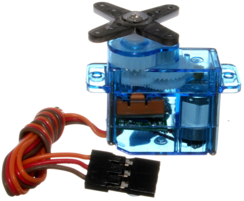
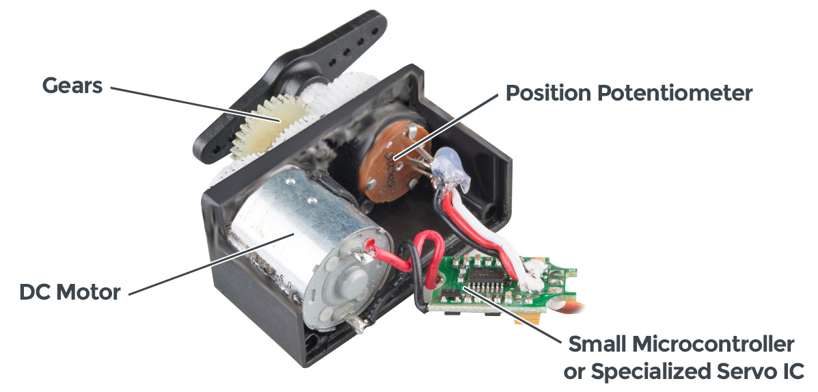
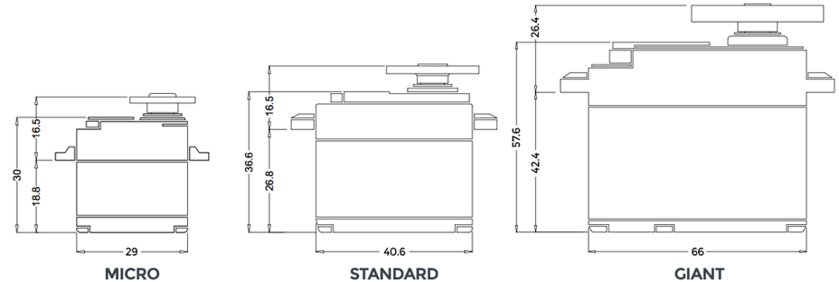
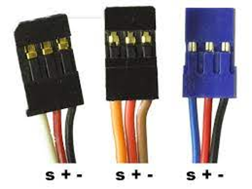
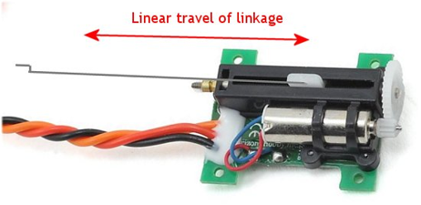
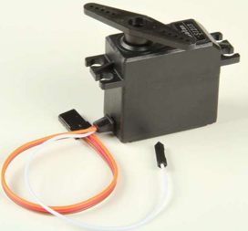
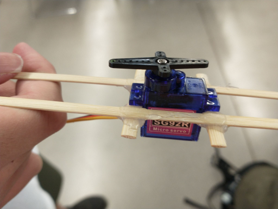
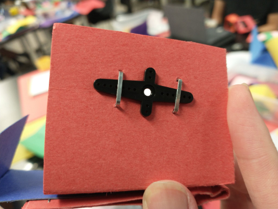
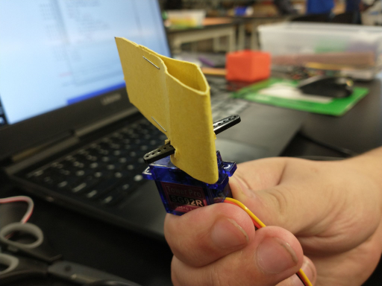
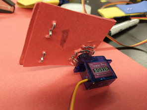

RC Servos
What is an RC Servo
- Not just a motor, an “Electromechanical System”

What’s inside

- https://www.sparkfun.com/servos
Common Servo Sizes

How do you plug in a Servo?
- Three wires:
- Ground - usually black
- Power - usually red
- Signal - neither red nor black

Other Kinds of Servos
- Linear Servos: Same idea, only you use a lead screw to translate the output rather than rotate
- Continuous Rotation Servos: The potentiometer is removed, so the control signal just relates to speed
- Servos with Feedback: Extra wire for position value


Servo Mounting Ideas




Controlling a Servo


- PWM: Pulse Width Modulation
- The “value” sent by a PWM signal is the proportion of the time on vs the “period”, or time between signals
- frequency = 1/period
- period = 200ms
- frequency = ?
Python Code for Controlling a Servo
from machine import Pin, PWM
from time import sleep
frequency = 50
range_low = 28
range_high = 122
servo1 = PWM(Pin(13), frequency)
while True:
servo1.duty(range_low)
sleep(1)
servo1.duty(range_high)
sleep(1)
More Advanced
from machine import Pin, PWM
from time import sleep
frequency = 50
range_low = 28
range_high = 122
servo1 = PWM(Pin(13), frequency)
servo2 = PWM(Pin(12), frequency)
def angle_to_pwm(degrees):
output_range = 122-28
input_range = 180-0
output_pwm = ((degrees/input_range)*output_range)+range_low
return int(output_pwm)
servo1.duty(angle_to_pwm(90))
while True:
for angle in range(0,1800,1):
print(angle/10)
servo1.duty(angle_to_pwm(angle/10))
sleep(.01)
for angle in range(1800,0,-1):
print(angle/10)
servo1.duty(angle_to_pwm(angle/10))
sleep(.01)
Controlling a Sevo with respect to time
#import all the libraries
from machine import Pin
from machine import PWM
import time
import math
# define constants
# This is the servo's driving frequency, which equals 20ms (1/f=t).
frequency = 50
# This PWM value corresponds to the servo's smallest angle (0)
range_low = 28
# This PWM value corresponds to the servo's largest angle (180)
range_high = 122
# create a new PWM instance and call it servo1
servo1 = PWM(Pin(13), frequency)
def angle_to_pwm(degrees):
'''
this function converts a desired angle to
its corresponding PWM value, using the range_low
and range_high constants defined inline
'''
# compute output scaling
output_range = range_high-range_low
# compute input scaling
input_range = 180-0
# divide the desired angle by the input scaling, multiply
#by the output scaling, and add the range_low value as an offset.
output_pwm = ((degrees/input_range)*output_range)+range_low
# return the computed value as an integer
return int(output_pwm)
# save the initial time in nanoseconds as t0
t0 = time.time_ns()
def get_seconds_float():
'''
This function accesses the internal time_ns() function and
converts it to a floating point value in seconds
'''
# get current time, t in nanoseconds
t = time.time_ns()
# subtract from t0 to obtain the time since the program began
dt = t-t0
# convert to a float firsty, and then convert from nanoseconds
# to seconds by multiplying by 10^9
dt = float(dt)/1e9
# return the change in time.
return dt
def my_signal(t,A,f,b,t0=0):
'''
convert the current time to a sinusoidal function
with user-defined amplitude(A), frequency(f), DC offset (b),
and time-offset(t0).
'''
y = A*(math.sin(f*(t-t0)*math.pi*2)) + b
return y
# here is our main loop
while True:
# time.sleep is not as necessary...can be commented
# out except if you want to print values out.
#time.sleep(.01)
# get the current time in (floating-point) seconds
t = get_seconds_float()
# compute the desired angle for servo 1
y1 = my_signal(t,60,.5,90)
# print out the desired angle. Not essential, can be commented out
print(y1)
# set servo 1 pwm value according to the desired angle
servo1.duty(angle_to_pwm(y1))
More Information
- https://www.sparkfun.com/servos
- Day 2 Kahoot Vocab Practice